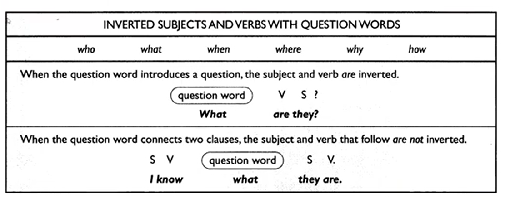
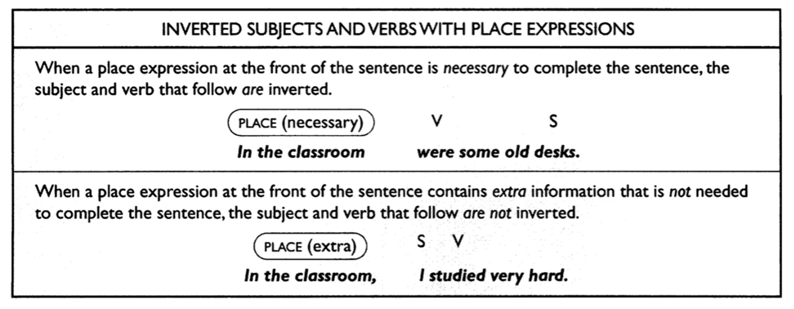
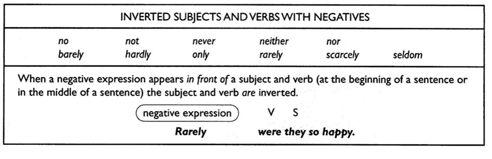

Pelajari teori lalu uji dengan latihan interaktif (feedback langsung).
SKILL 15 — Invert Subject And Verb With Question Wods
Invert Subject And Verb With Question Wods
Subject and verb dapat di ‘tukar’ dalam beberapa kondisi. Subject dan helping verb biasanya di ‘tukar’ dalam format kalimat tanya. Helping Verb yang dimaksud adalah be, have, can, could, will, would, dst.
He can go to the movies
Can he go to the movies?
He is ok
Is he ok?
Apabila tidak menggunakan helping verb diatas maka kita dapat menggunakan do, does, did
He goes to the movie
Does he go to the movie?
He went to the movie
Did he go to the movie?
Penukaran antara subject dan verb dalam WH-question dapat memiliki lebih dari 1 pola perhatikan contoh :
what is the homework?
where are you going?
I do not know what the homework is
Do you know where you are going

Contoh:
The lawyer asked the client why ___ it?
Did he do
Did he
He did
Did
📝 Latihan Interaktif — Skill 15
SKILL 16 — Invert The Subject And Verb With Place Expression
Invert The Subject And Verb With Place Expression
kalimat yang memuat keterangan tempat kadang subject dan verb dapat ditukar. Yang paling umum, ketika menggunakan kata seperti here, there, nowhere.
Here is the book that you lent me
There are the keys that I thought I lost
Subject dan verb juga dapat ditukar setelah prepositional phrases expressing place. Contoh :
In the closet are the clothes that you want
Around the corner is Sam’s house
Beyond the mountains lies the town where you will live
CATATAN! Penukaran antara subject dan verb dapat dilakukan hanya apabila prepositional phrases of place tersebu digunakan untuk melengkapi kalimat. Contoh :
In the forest are many exotic birds
In the forest I walked for many hours
Contoh:
On the second level of the parking lot ___ .
Is empty
Are empty
Some empty stalls are
Are some empty stalls

📝 Latihan Interaktif — Skill 16
SKILL 17 — Invert The Subject And Verb With Negatives
Invert The Subject And Verb With Negatives
Subject dan verb dapat ditukar tempatnya setelah beberapa ekspresi yang memuat makna negative. Ketika awal kalimat memuat no, not never maka subject dan verb ditukar. Contoh :
Not once did I miss a question
Never has Mr. Jones taken a vacation
At no time can the woman talk on the telephone
Selain contoh diatas ada juga hardly, barely, scarcely, only juga dapat diartikan sebagai negative. Contoh :
Hardly ever does he take time off
Only once did the manager issue overtime paychecks
Ketika makna negative ada ditengah juga bisa dilakukan penukaran antara subjcet dan verb. Seperti penggunaan niether atau nor
I do not want to go, and neither does Tom
The secretary is not attending the meeting, nor is her boss
Contoh:
Only in extremely dangerous situations ___ stopped
Will be the printing presses
The printing presses will be
That the printing presses will be
Will the printing presses be

📝 Latihan Interaktif — Skill 17
SKILL 18 — Invert The Subject And Verb With Conditionals
Invert The Subject And Verb With Conditionals
Dalam beberapa conditional sentence subject dan verb juga dapat ditukar. Hal bisa dilakukan apabila helping verb nya adalah had, should, were maka conditional connector yaitu if dihilangkan. Contoh :
If he had taken more time, the results would have been better.
Had he taken more time, the results would have been better
I would help you if I were in a position to help
I would help you were I in a position to help
If you should arrive before 6.00, just give me a call
Should you arrive before 6.00, just give me a call
Soal dalam TOEFL :
The report would have been accepted ___ in checking its accuracy